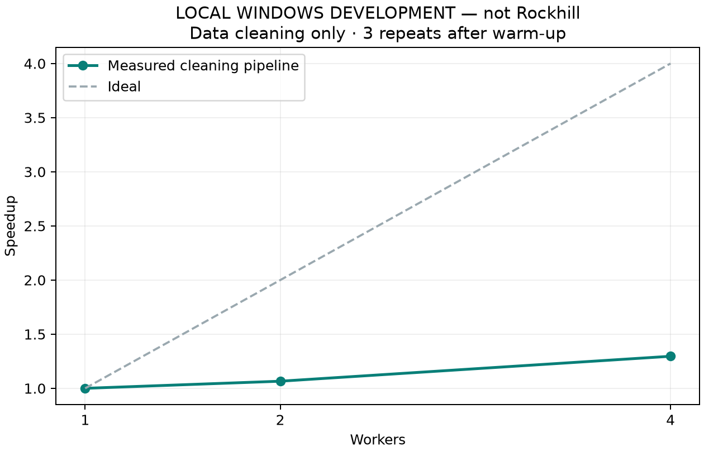

CS4207 · GROUP 20 · MEMBER A · 2026-11-25
Member A: responsibilities and local delivery
A's responsibilities: prepare documented, audited clean data for the team; provide the matching poster section and a short speaking part; collect the other members' material, format the complete poster and upload it.
Current status: the complete January 2026 file has been processed locally. These are real local results, not Rockhill assessment evidence or the group's model results. B/C/D's work, server execution and website submissions are still outstanding.
3,724,889raw records
3,504,372clean records
94.08%retained
100,000team development sample
1. Next steps for A
- Read this guide and open A_Data_Module.ipynb; understand every cleaning rule and reported count.
- Send Group20_A_TEAM_HANDOFF.zip to B/C/D and agree the target, field contract and prediction assumptions.
- Confirm the thresholds and data months. The current scope is January only, not the entire server dataset.
- Re-run on Rockhill using the allocated group account and save the actual environment, counts, timings and equality checks.
- Add the material from A_Poster_Section_EN.html and the cleaning figure to the group poster.
- Collect B's EDA/features, C's methodology/baselines and D's measured model results; replace every placeholder before submission.
- Rehearse A's speaking part for approximately 65–70 seconds and upload the complete poster by the end of 26 November.
2. Target definition and leakage prevention
The target duration_minutes is the elapsed seconds between pickup and dropoff divided by 60. The prediction setting assumes the intended destination zone is known at pickup. Recorded dropoff zone is a proxy for that assumption. For a pickup-only variant, use inputs_and_target(..., intended_destination_known=False).
Allowed raw inputs are pickup time (B derives calendar features), pickup zone, destination zone under the stated assumption, passenger count and its missing indicator. Do not use every non-target column as X. row_id, source_file, final rate_code and vendor_id are metadata by default.
Raw dropoff time, realised distance, speed, fares, tips and payment type are absent from the prediction-data handoff. They are used only for labels or retrospective quality checks. Report this selection limitation; do not claim coverage of every real departure-time trip. Removing extreme durations also changes the target distribution.
3. Cleaning rules: agree any changes as a team
| Rule | Current default / treatment | Rationale and limitations |
|---|
| File month | Keep pickups within the file month; dropoffs may cross into the next month | Assign trips by pickup time and remove out-of-month spillover records |
| Duration | 1–180 minutes, inclusive | Exclude invalid or extreme trips; this fixed study scope needs team agreement |
| Distance | Greater than 0 and at most 100 miles | Exclude meter errors and atypical long trips; realised distance is used only for retrospective quality checks |
| Fare | Finite and greater than 0 | Exclude refunds, free trips and invalid values; disclose the resulting population restriction |
| Average speed | At most 100 mph (approximately 161 km/h) | Computed from observed distance and duration, solely as a broad quality screen |
| Missing passenger count | Retain missing values; convert negative, above-nine or non-finite values to missing; retain zero as an uncertain recorded value | Do not discard all Flex Fare trips; B/C must fit any imputation on training data only |
| Zones and rate codes | Preserve string categories and explicit missing/unknown markers | Final rate_code is audit metadata only; B/C learn feature encodings on training data |
| Duplicate-looking records | Do not deduplicate on time or zone values alone | Distinct real journeys can share identical recorded attributes |
These thresholds define the documented default study scope; they are not lecturer-prescribed constants. After changing config.json, run into a new output directory and update every affected poster figure.
4. Measured cleaning audit
| step |
rule |
removed |
remaining |
| raw |
Input rows |
0 |
3724889 |
| missing_timestamps |
Missing or invalid pickup/dropoff timestamp |
0 |
3724889 |
| pickup_outside_file_month |
Pickup outside the month in source filename |
7 |
3724882 |
| non_positive_duration |
Duration <= 0 minutes |
45070 |
3679812 |
| duration_outside_scope |
Duration outside configured [min, max] minutes |
40430 |
3639382 |
| missing_or_nonfinite_distance |
Distance missing or non-finite |
0 |
3639382 |
| non_positive_distance |
Distance <= 0 miles |
98392 |
3540990 |
| distance_above_limit |
Distance exceeds configured maximum |
156 |
3540834 |
| missing_or_nonfinite_fare |
Fare missing or non-finite |
0 |
3540834 |
| non_positive_fare |
Fare <= 0 dollars |
36213 |
3504621 |
| speed_above_limit |
Observed average speed exceeds configured maximum |
249 |
3504372 |
Apply rules in the order shown. Each record is counted at its first failing rule, so removals do not overlap. Removed: 220,517; retained: 3,504,372. Retained Flex Fare records with missing passenger count/rate code: 993,400.

5. Handoff to B/C/D
from handoff import load_sample, chronological_split, inputs_and_target
df = load_sample()
# January development example only; C and the team must agree final dates
train, val, test = chronological_split(df, '2026-01-22', '2026-01-27')
X_train_raw, y_train = inputs_and_target(train)
# B/C derive time features and fit imputation/encoding on training data only.
Prefer the Parquet sample to avoid CSV type-inference problems. The 100,000-row sample uses a fixed seed and row-key hash across all retained trips in the month, followed by sorting by pickup time. It is neither the first 100,000 records nor an independent final test set. Full cleaned_parts preserve source-file/source-row order, not global chronological order; split on timestamps.
6. Local and server execution
In the original workspace, dependencies are installed in tmp/group20-runtime and detected automatically. On another computer or server, create a virtual environment and install requirements.txt. The lightweight ZIP excludes raw files and full cleaned parts; to rebuild, place the agreed raw file in data/raw or use the Rockhill path.
python -m pip install -r requirements.txt
python -m unittest discover -s tests -v
python eta_data.py --output outputs/my_new_run --workers 1
python eta_data.py --benchmark --output outputs/my_benchmark --repeats 3
python build_materials.py
python verify_delivery.py
build_materials.py and verify_delivery.py target the verified local_jan2026 delivery. For another run, explicitly use its corresponding outputs instead of relabelling this local report. Data export refuses to overwrite an existing output directory.
# Rockhill: use the allocated group account and activate the group environment
# January example only; change the months after agreeing the scope
srun --partition=cs4207 python eta_data.py --input-glob '/home/cs4207/data/yellow_tripdata_2026-01.parquet' --output outputs/rockhill_january --workers 1
# After confirming the allocation can provide four CPUs:
bash run_rockhill.sh
Do not request a GPU number or use the student partition. Check the allocated CPU count before running four workers. This script is an execution entry point; no server login, password change or website upload has been performed for this delivery.
7. Data-parallel evidence included
The same function processes separate batches, followed by fixed-order shard aggregation. A bounded queue avoids loading the entire dataset. Local runs use 1/2/4 workers, one warm-up per configuration and three measured repeats; all output fingerprints match. Timing includes reading, pool startup, cleaning, aggregation and fingerprinting, but excludes sample selection and export writes.
| workers |
mean_seconds |
std_seconds |
speedup |
efficiency |
all_outputs_equal |
| 1 |
4.553 |
0.058 |
1.000 |
1.000 |
True |
| 2 |
4.272 |
0.182 |
1.066 |
0.533 |
True |
| 4 |
3.513 |
0.113 |
1.296 |
0.324 |
True |

This measures cleaning-pipeline performance, not model training. Process startup, serialisation, I/O and small-batch overhead limit speedup. Do not label these local Windows measurements as Rockhill results. The team still needs the formal performance interpretation, including Amdahl's law.
8. Remaining group responsibilities
The original allocation covers EDA and different models but does not explicitly assign two task-parallel patterns, two observed nondeterminism sources with verified fixes, and fair sequential/parallel comparisons. A includes data-parallel cleaning. Assign parallel feature extraction and parallel hyperparameter search, plus owners for the nondeterminism experiments. C and D working on separate models at the same time does not by itself demonstrate coded task parallelism.
9. Poster and speaking materials
10. Deadlines and final assembly
2026 deadlines: poster upload by the end of 26 November; presentation on 27 November, 14:00–16:00, with a strict five-minute limit; final notebook by 29 November, 23:59. Four 75-second talks leave no transition margin, so target 65–70 seconds per speaker.
Before submission, check readable figures, clear units and labels, notebook evidence for every result, accurate data scope and environment, replacement of all placeholders, and the actual upload destination. This A-only package contains no final model scores or group conclusions.
11. Delivery contents
- eta_data.py / config.json: cleaning and data-parallel entry point.
- A_Data_Module.ipynb: A's integration notebook; verify_delivery.py re-executes its code cells.
- handoff.py: safe input selection and chronological split helpers.
- outputs/local_jan2026/cleaned_parts: full cleaned January data, available only in the original local folder.
- outputs/local_jan2026/sample_100k.csv / .parquet: 100,000-row development sample.
- Manifest, cleaning audit, environment, benchmark and verification files: provenance and evidence.
- Group20_A_TEAM_HANDOFF.zip: lightweight team package; raw files and full clean partitions are excluded.
12. Sources
NYC TLC official data page · Yellow Taxi data dictionary. Course sources: CS4207 Coding Challenge Rubric, Week 10 Session 1, and the 19/23 November announcements. The manifest records the public raw file's SHA256; byte-for-byte equality with the server file has not yet been checked.